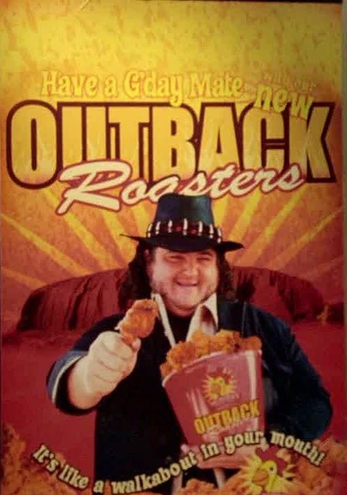

Mr. Cluck's Chicken Snack Bites

Description
It's like a walkabout in your mouth!
Ingredients
- 1 pound boneless, skinless chicken strips
- 2 cups panko (Japanese coarse bread crumbs)
- 1 cup all-purpose flour
- 2 teaspoons kosher salt
- 1 tablespoon garlic powder
- Freshly ground black pepper
- 3 eggs, beaten
- Peanut oil, for frying
Steps
- Cut chicken into 1-inch cubes and set aside in a mixing bowl. Add garlic powder and salt to bowl and mix thoroughly
- In a deep fryer, heat oil to 360 degrees or heat in a skillet to medium high. If using a skillet, fill about halfway with oil.
- Dip chicken in beaten eggs, roll in flour-panko mix, dust off residue. Fry in oil 5 to 6 minutes in a deep fryer; 10-12 minutes in the skillet. When crust is golden brown, it’s ready to drain on papertowels. Dust with Four-Toed Spice Rub.
- Serve with Dharma Ranch Dressing or barbecue sauce.